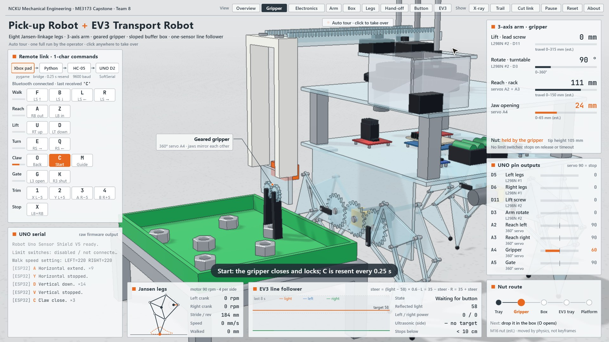
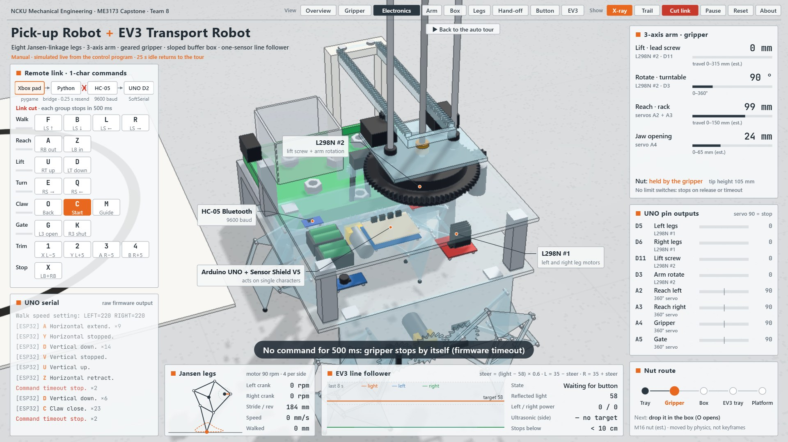
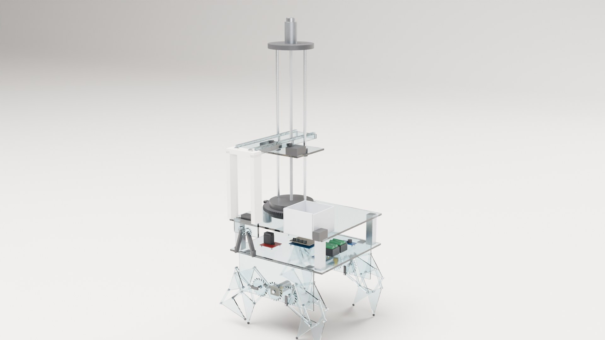
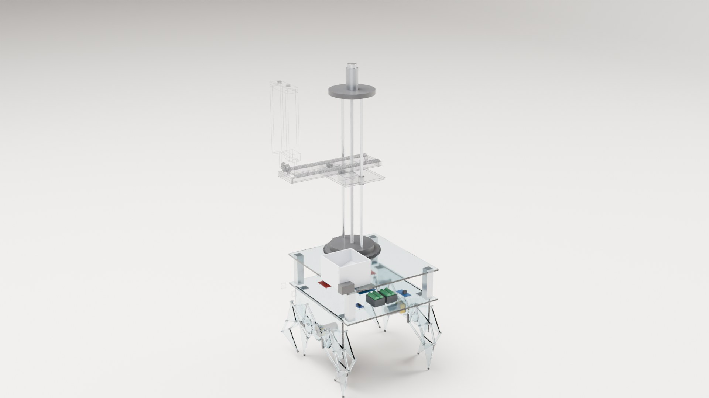
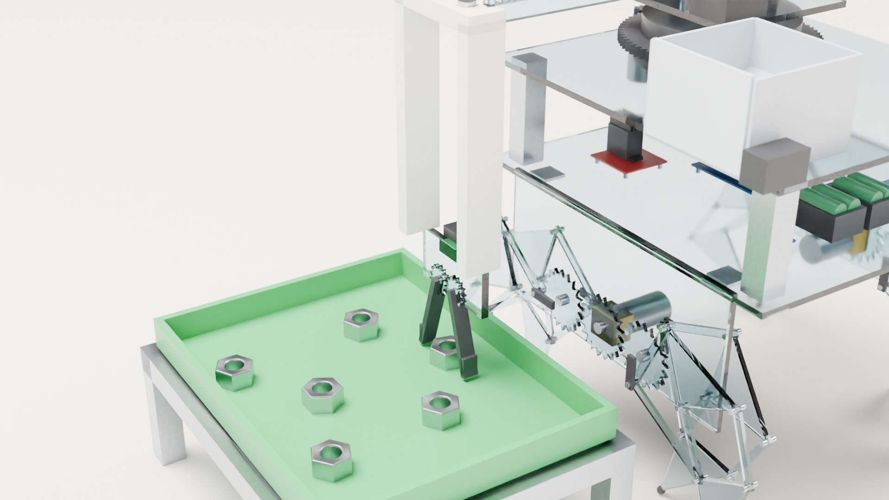
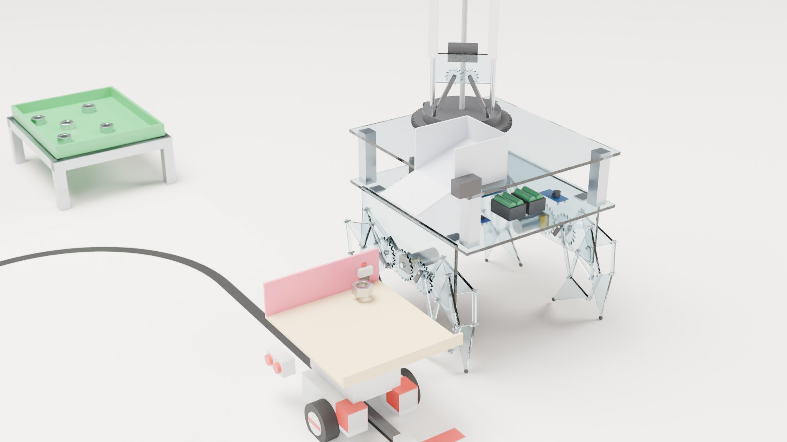

Interactive simulation · 互動模擬
Drive the robot yourself with the same single-letter commands the real one used, switch between nine camera views, and cut the wireless link to watch the 500 ms safety stop. Left alone, it plays the whole pick-and-hand-off sequence. Best on a computer screen.


Command protocol, pin map, PWM and servo values, the 0.25 s resend and the 500 ms timeout follow the robot's control program. Link lengths, travel ranges and the field layout are estimated from photos and CAD.
30-second product film · 30 秒產品片
The robot assembling layer by layer, then picking up a nut, dropping it into its buffer box, walking over and handing it to the EV3, which drives it to the unloading platform. Rendered in Blender from the simulation's own motion.
44-second tour of the simulation · 44 秒模擬導覽
How it works · 怎麼運作
| Legs | Eight Jansen-linkage legs, four per side, each side driven by one motor through a crank. Speeding up or slowing the left and right motors separately corrects drift. |
|---|---|
| Arm | Three axes: lead-screw lift, turntable rotation, and horizontal reach driven by two continuous servos turning in opposite directions. |
| Gripper | Two jaws geared together so they always open and close by the same angle. |
| Hand-off | Parts wait in a box with a sloped floor; a servo gate opens and they slide onto the EV3's tray. |
| EV3 robot | One light sensor with proportional steering follows the line; a side ultrasonic sensor finds the unloading platform and stops the robot there. |
Electronics and control (my part) · 電控
| Control chain | Xbox controller → Python bridge on a laptop → HC-05 Bluetooth (9600 baud) → Arduino UNO + Sensor Shield V5 → two L298N motor drivers and four continuous servos. |
|---|---|
| Command protocol | One character per action (F/B/L/R walk, U/D lift, E/Q rotate, A/Z reach, O/C gripper, G/K gate, X emergency stop), so every function can be tested from a serial monitor. |
| Fail-safe | Held buttons are resent every 0.25 s; if the UNO hears nothing for a group for 500 ms, it stops that group. A dropped link or a closed program cannot leave the robot running. |
| Power | Separate battery packs: one for the DC motors, one stepped down to 5 V (LM2596) for the logic and servos, all on a common ground; motor current runs on heavy wire, not breadboard jumpers. |
| Before building | Pin map, protocol, limit-switch logic, emergency stop and command timeout were simulated in Wokwi before any hardware was wired. |
Mechanical design of the legs, arm and gripper, and the EV3 robot, were done by teammates.
Renders · 算圖



